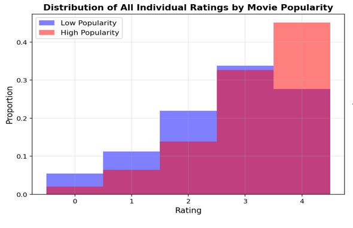

Data Science Projects

Vat Lexicon MapReduce Visualizer
A real-time MapReduce simulation investigating the vocabulary of synthetic identities (MAUK and ABACI) living at vat.social. This project analyzes thousands of messages to compute Jaccard similarity, word frequency distributions, and morphological "nonce" patterns, visualizing the data processing pipeline from raw Supabase logs to final reduced results.

Rate My Professor Data Analysis & Modeling
A large-scale analysis of nearly 90,000 student evaluations from RateMyProfessor.com. This study leverages Weighted Least Squares, Logistic Regression, and PCA to uncover hidden patterns in academic evaluations—investigating gender bias, the predictive power of qualitative tags (e.g., *Inspirational*, *Tough Grader*), and the metrics that correlate with student-assigned descriptors across STEM and humanities disciplines.

Hypothesis Testing of Movie Ratings Data
An exploratory statistical analysis of movie preferences across 1,097 participants and 400 films. This study investigates the intersection of cinematic ratings with behavioral and demographic factors, such as sensation-seeking traits and social viewing habits. Utilizing rigorous hypothesis testing (α = 0.005), the project identifies significant correlations between viewer identity and the film experience.